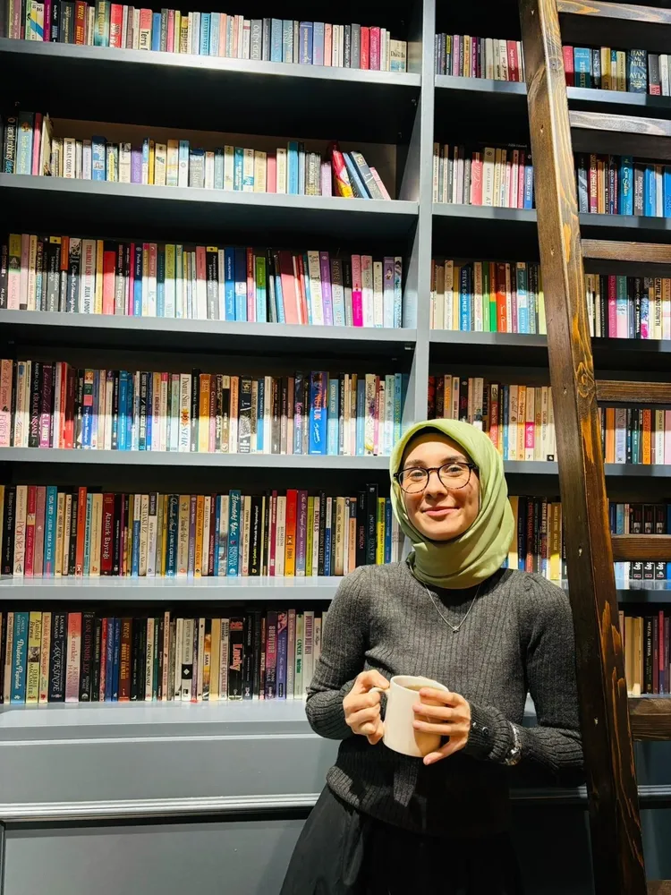

Klinik Psikolog
Rüveyda Serra Bek
Uzman Klinik Psikolog Rüveyda Serra Bek, Psikoloji lisans eğitimini İstanbul Sabahattin Zaim Üniversitesi’nde yüksek onur derecesi ile tamamladı. Klinik Psikoloji yüksek lisans eğitimini İstanbul Sabahattin Zaim Üniversitesi’nde tamamladı ve uzmanlık tezini “Ebeveyn İlişkisi Algısı ile Psikolojik Esnekliğin; Depresyon, Stres ve Anksiyete Üzerindeki Yordayıcı Etkileri”konusu üzerine hazırlayarak bu alanlardaki bilimsel çalışmalarını derinleştirmiştir.
Mesleki gelişim sürecinde saha deneyimi olarak; Prof. Dr. Mazhar Osman Ruh Sağlığı ve Sinir Hastalıkları Eğitim ve Araştırma Hastanesi’nde yatılı servis ve poliklinik süreçlerinde stajyer psikolog olarak görev almıştır. Bunun yanı sıra Beşiktaş Rehberlik ve Araştırma Merkezi, Ev Okulu Derneği, Pen Akademi ve Lavien Psikoloji gibi pek çok kurumda klinik deneyim kazanmış; çocuk, ergen ve yetişkin gruplarıyla çalışma fırsatı bulmuştur.
Akademik çalışmalarının yanı sıra sosyal sorumluluk projelerinde de aktif rol almıştır. İZÜ Psikoloji Kulübü’nde Dış İşleri Birim Liderliği görevini üstlenmiş, uluslararası seminerlerin organizasyonunu yürütmüştür. Ayrıca Yol Psikoloji bünyesinde Dergi Yayın Koordinatörlüğü yaparak literatüre yazınsal katkılar sunmuştur.
Çalışmalarımgitda Bilişsel Davranışçı Terapi (BDT) ve Şema Terapi yaklaşımlarından yararlanıyorum.
Psikoloji lisans eğitimimi başarı bursu ile tamamladım. Klinik Psikoloji yüksek lisansımı tamamlayarak Klinik Psikolog unvanını aldım.
Eğitim sürecimde çeşitli hastanelerde ve psikolojik danışmanlık merkezlerinde staj yaparak klinik deneyim kazandım.
2015 yılından bu yana çeşitli kurumlarda danışanlarımla psikoterapi süreçlerini yürütmekteyim.
Mesleki gelişimi yaşam boyu süren bir süreç olarak görüyor; eğitimler, süpervizyonlar ve bilimsel çalışmalarla kendimi geliştirmeye devam ediyorum.